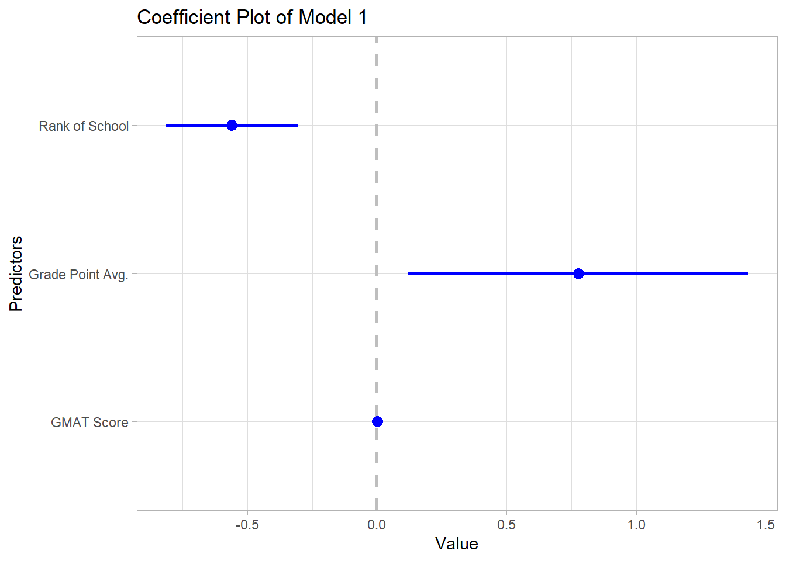
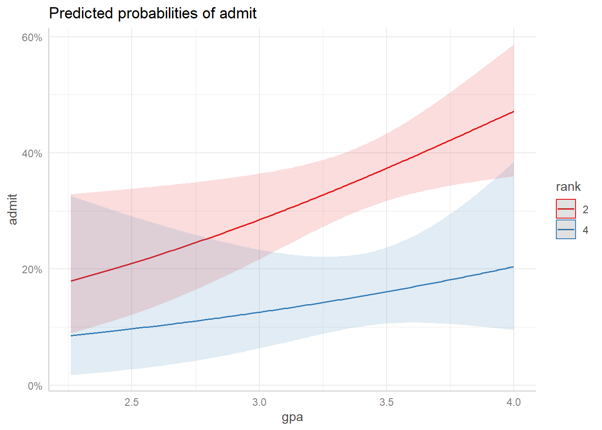
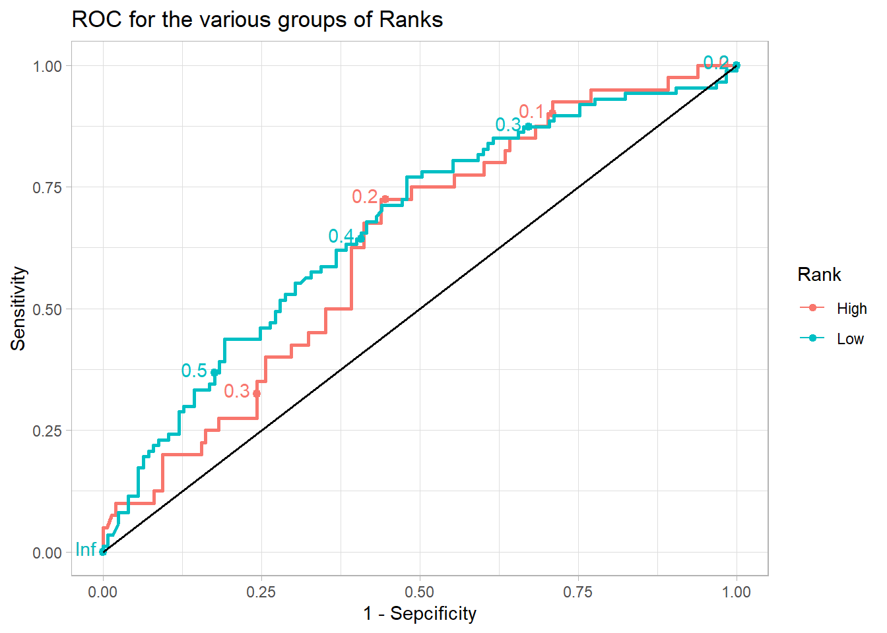

Data Frame Summary
adm
Dimensions: 400 x 4
Duplicates: 5
---------------------------------------------------------------------------------------
No Variable Stats / Values Freqs (% of Valid) Valid Missing
---- ----------- --------------------------- --------------------- ---------- ---------
1 admit Min : 0 0 : 273 (68.2%) 400 0
[integer] Mean : 0.3 1 : 127 (31.8%) (100.0%) (0.0%)
Max : 1
2 gmat Mean (sd) : 587.7 (115.5) 26 distinct values 400 0
[integer] min < med < max: (100.0%) (0.0%)
220 < 580 < 800
IQR (CV) : 140 (0.2)
3 gpa Mean (sd) : 3.4 (0.4) 132 distinct values 400 0
[numeric] min < med < max: (100.0%) (0.0%)
2.3 < 3.4 < 4
IQR (CV) : 0.5 (0.1)
4 rank Mean (sd) : 2.5 (0.9) 1 : 61 (15.2%) 400 0
[integer] min < med < max: 2 : 151 (37.8%) (100.0%) (0.0%)
1 < 2 < 4 3 : 121 (30.2%)
IQR (CV) : 1 (0.4) 4 : 67 (16.8%)
---------------------------------------------------------------------------------------
32.2 Assumptions for a logistic regression
Cases are randomly sampled
Data free of bivariate or multivariate outliers
The outcome variable is dichotomous
The association between the continuous predictor and logit transformation is linear
Model-free of collinearity
32.3 Building the model
Then we build a logistic regression model using the rank variable as a numeric variable
Code
mod.1<-glm(admit ~ ., data = adm, family ="binomial")
32.4 Visualizing the model and its properties
A summary of the model can be visualized from the summary() function. Next, we use the broom package to display various properties of the model in a tabular form. These can then be used for further analysis.
Code
mod.1%>%summary()
Call:
glm(formula = admit ~ ., family = "binomial", data = adm)
Coefficients:
Estimate Std. Error z value Pr(>|z|)
(Intercept) -3.449548 1.132846 -3.045 0.00233 **
gmat 0.002294 0.001092 2.101 0.03564 *
gpa 0.777014 0.327484 2.373 0.01766 *
rank -0.560031 0.127137 -4.405 1.06e-05 ***
---
Signif. codes: 0 '***' 0.001 '**' 0.01 '*' 0.05 '.' 0.1 ' ' 1
(Dispersion parameter for binomial family taken to be 1)
Null deviance: 499.98 on 399 degrees of freedom
Residual deviance: 459.44 on 396 degrees of freedom
AIC: 467.44
Number of Fisher Scoring iterations: 4
None of the variables has a significant interaction and hence the linearity between the variable and the logit of the outcome can be assumed.
Residuals are referred to as deviant residuals. Also, we have out beta estimates and significance (p-values). Null deviance is a measure of error if you estimate only the model with the intercept term and not the x variable at all at the right. So we compare the value of the Residual deviance to the Null deviance. Also, we can use the AIC, smaller is better here.
32.5 Plotting coefficients
The coefficient of the regression can be plotted using the coefplotpackage. This is illustrated below
Code
coefplot::coefplot( mod.1, predictors=c("gpa", "rank", "gmat"), guide ="none", innerCI =2, outerCI=0, title ="Coefficient Plot of Model 1", ylab ="Predictors",decreasing =FALSE, newNames =c(gpa ="Grade Point Avg.", rank ="Rank of School",gmat ="GMAT Score")) +theme_light()

32.6 Predictions for the model - Extracting and plotting
Predictions from the model can be obtained with the effects package. This is illustrated below. First, we predict the model using the gpa, convert it to a tibble, plot the predicted probabilities and finally compare the plotted probabilities for the persons ranked as 1 to 5.
glm(admit ~ gpa*rank + gmat, data = adm, family ="binomial") %>% ggeffects::ggpredict(terms =c("gpa[all]", "rank[2,4]")) %>%plot()

32.7 Comparing two nested models
We can compare the two models using the anova function in R. The first one is the Null Mode and the other includes the gpa variable. This we do with the analysis of the deviance table as below. Remember these must be nested in each other.
Code
first_model <-glm(admit ~1, data = adm, family ="binomial")second_model <-glm(admit ~ gpa, data = adm, family ="binomial")anova(first_model, second_model, test ="Chisq") %>% broom::tidy() %>% gt::gt() %>% gt::opt_stylize(style =6, color ="gray")
term
df.residual
residual.deviance
df
deviance
p.value
admit ~ 1
399
499.9765
NA
NA
NA
admit ~ gpa
398
486.9676
1
13.0089
0.0003100148
Code
rm(first_model, second_model)
Results indicate a significant improvement between the Null model and the one with the gpa as a predictor
32.7.1 ROC curves for model
Next, we compute the predicted probabilities of being admitted for each individual. And then generate ROC curves after we re-categorize standard error of the Rank variable into High and Low.
Code
data.frame(adm = adm$admit, pred = mod.1$fitted.values, rank2 =ifelse(adm$rank >2, "High", "Low") %>%as.factor()) %>%arrange(adm) %>%ggplot(aes(d=adm, m=pred, col=rank2))+ plotROC::geom_roc(n.cuts =5) +geom_segment(x=0, y=0, xend=1, yend=1, col="black", lty ="solid", linewidth =0.7) +labs(title ="ROC for the various groups of Ranks",x ="1 - Sepcificity",y ="Sensitivity",col ="Rank") +theme_light()

Rank is considered as a numeric variable but it is a categorical one so we convert it to one below